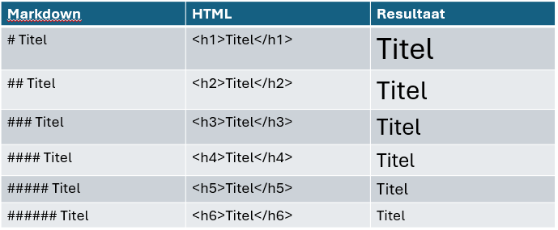

Markdown
Onder de YAML kun je verder met Markdown en/of codeblokken. Markdown gebruik je voor het maken van - eventueel opgemaakte - titels en stukken tekst, het invoegen van plaatjes en links, en voor het opdelen van tekst naar kolommen.
Titels
HTML ondersteunt het maken van 6 niveaus aan titels. Het hoogste niveau aan titel, met default ook het grootste lettertype, is h1. De kleinste titel is h6. Binnen Markdown maak je een titel van niveau 1 door 1 hashtag te typen, gevolgd door een spatie en dan de tekst die je als titel wilt. Voor een titel van niveau 2 typ je 2 hashtags achter elkaar, voor niveau 3 gebruik je 3 hashtags, etc.

Titels die je maakt door middel van hashtags verschijnen ook in de inhoudsopgave, als je deze aan hebt gezet in de YAML. Bij een toc-depth van 1 worden alleen titels van niveau 1 getoond. Bij een toc-depth van 3 worden titels van niveau 1 t/m 3 getoond in de inhoudsopgave, etc.
---
format:
html:
toc: TRUE
toc-location: left
toc-depth: 3
toc-title: "Inhoudsopgave"
---Digitoegankelijke titels
Je zou titels ook kunnen maken zonder de hashtags te gebruiken, maar door de lettergrootte aan te passen via css. In het kader van digitoegankelijkheid is dat echter niet aan te raden. Mensen die een screenreader gebruiken kunnen door middel van de informatie over de verschillende titelniveaus snel een beeld krijgen van wat er op een pagina staat en ook snel naar verschillende secties navigeren. Om dezelfde reden is het geen goed idee om wel titels van niveau 1 en 3 te gebruiken, maar titels van niveau 2 over te slaan. Mocht je een voorkeur hebben voor de lettergroottes van 1 en 3, gebruik van niveau 1 en 2 en pas via css de lettergrootte van niveau 2 aan. Op die manier is de structuur duidelijk voor mensen die een screenreader gebruiken, en tegelijkertijd de layout zoals je wenst voor mensen die dit niet doen.
Dik- en schuingedrukte tekst
Binnen Markdown kun je tekst dikgedrukt maken door het woord te omgeven door ofwel 2 sterretjes, ofwel 2 underscores. **tekst** en __tekst__ zorgen allebei voor dikgedrukte tekst.
Schuingedrukte tekst krijg je door het gebruik van 1 sterretje of underscore: *tekst* of _tekst_.
Plaatjes invoegen
Plaatjes kun je invoegen door middel van . Tussen de blokhaken kun je een onderschrift zetten, indien je dit wenst. Je kunt het echter ook leeg laten. Tussen de ronde haken zet je het pad naar het plaatje. Heb je in jouw project een submap met de naam “Afbeeldingen” en in deze map een afbeelding “GGD_logo.png”, dan zet je in de Markdown .
Je kunt het plaatje extra parameters meegeven via accolades. Zo kun je de afbeelding links uit laten lijnen en een alternatieve tekst meegeven via {fig-align="left" fig-alt="Logo van de GGD"}. De alternatieve tekst is wat een screenreader voorleest op het moment dat het een plaatje tegenkomt. Als een afbeelding géén informatie toevoegt, dan is het beter om ook geen tekstalternatief te geven. In dit voorbeeld kan de alternatieve tekst dus beter achterwege gelaten worden.
Links naar andere pagina’s
De Markdown code voor links naar andere pagina’s lijkt erg op die voor het invoegen van plaatjes: [](). Het verschil is dat bij links niet gestart wordt met een uitroepteken. Tussen de blokhaken komt de lopende tekst die aanklikbaar is. Tussen de ronde haken komt de internetpagina waar naar wordt verwezen.
Voorbeeld:
Lees meer over dit onderwerp op de [website van de GGD](http://www.ggdhvb.nl).
wordt getoond als
Lees meer over dit onderwerp op de website van de GGD.
Link openen in nieuw tabblad
Links worden in de HTML code neergezet als <a>-tag. In de html staat minimaal de tag zelf en een ‘href’ attribuut, die de locatie bevat waar je naartoe wilt linken. Een link naar de GGD website ziet er bijvoorbeeld als volgt uit: `<a href="www.ggdhvb.nl">Link naar de GGD website</a>. Als je zo’n link aan zou klikken, dan word je doorgeleid naar de GGD website en ben je het scherm waar je was kwijt (tenzij je linkboven op de pijl naar links klikt). Voor onze informatieproducten is het fijner als het rapport dat de persoon aan het lezen was blijft staan, en dat de aangeklikte link wordt geopend in een nieuw venster. In de html code zou je dit doen met <a href="www.ggdhvb.nl" target="_blank"></a>. In Quarto kun je dit doen via [](){target="_blank"}.
Wil je dit niet bij elke link opnieuw invoeren, voeg dan een stuk Javascript code in. Meer uitleg hierover vind je in het Javascript hoofdstuk.
Digitoegankelijke links
Maak geen gebruik van teksten als “Klik hier voor de website van de GGD”, waarbij links naar websites onder het woord “hier” worden gezet. Mensen met screenreaders kunnen een lijst opvragen van alle links die op een website staan, waarbij de tekst waar de link onder zit wordt getoond als context. Als zij een lijst krijgen met 6 keer het woord “hier” gevolgd door verschillende urls, dan is dat voor hun weinig informatief.
Voor Swing en iframes: Links die altijd in een nieuw venster openen
De meeste websites blokkeren toegang via ‘iframes’. Dit zorgt dus voor problemen wanneer we rapporten in een iframe plaatsen zoals in Swing gedaan wordt. Om dit op te lossen kunnen we een links de html-eigenschap meegeven target="_blank". Hiermee worden links automatisch in een nieuw tabblad geopend, waardoor de toegang niet geblokkeerd wordt.
Het zou erg vervelend zijn dit bij alle links te moeten doen. Zie
Lijsten
Je kunt een ongenummerde lijst maken door gebruik te maken van het * teken. Genummerde lijsten maak je simpelweg door een getal gevolgd door een punt te typen. Sub-bullets maak je door de tekst in te laten springen door middel van 1 tab of minimaal 2 spaties.
* unordered list
+ sub-item 1
+ sub-item 2
- sub-sub-item 1geeft
- unordered list
- sub-item 1
- sub-item 2
- sub-sub-item 1
Tabellen
Het is mogelijk om tabellen te maken in Markdown. De syntax hiervan is echter wat omslachtig en het resultaat is niet digitoegankelijk.
fruit| price
-----|-----:
apple|2.05
pear|1.37
orange|3.09geeft
| fruit | price |
|---|---|
| apple | 2.05 |
| pear | 1.37 |
| orange | 3.09 |
Het is beter om je data in te lezen of aan te maken in een R codeblok en vervolgens met de gt package een tabel te maken. Dit levert digitoegankelijke tabellen met veel opmaakmogelijkheden.
Div
Een div is een html element waarmee je inhoud bij elkaar kunt groeperen. Een div open je door middel van een regel met minimaal 3 dubbele punten en sluit je op dezelfde manier:
::: random-naam
Tekst die hier staat
wordt in een div geplaatst.
:::In het bovenstaande voorbeeld heeft de div een class “random-naam” meegekregen. Een andere manier om een class mee te geven is door middel van accolades en een punt voor de naam:
::: {.random-naam}
Een ID geef je op dezelfde manier, maar dan met een hashtag in plaats van een punt:
::: {#random-naam}
Classes en IDs zijn nodig om via css of Javascript in te kunnen haken op divs. Je gebruikt classes als je meerdere divs in 1 keer wilt benaderen. Een ID is een uniek kenmerk en ken je daarom toe aan maximaal 1 div.
::: {.tabel}
Deze div krijgt een class mee
:::
::: {#tabel1}
Deze div krijgt een ID mee
:::Kolommen
Kolommen maak je aan door middel van divs, die je een bepaalde parameter meegeeft. Er zijn een twee opties qua parameter. Je kunt het aantal kolommen opgeven met {layout-ncol="3"}, dit geeft 3 kolommen van gelijke grootte.
::: {layout-ncol="3"}
Linkerkolom
Midden
Rechterkolom
:::geeft
Linkerkolom
Midden
Rechterkolom
Je kunt ook gebruik maken van de layout parameter. Dit geeft je veel flexibiliteit qua kolombreedtes en maakt het mogelijk om per rij een verschillend aantal kolommen te hebben. Als je 1 rij wilt, maar je gebruik van {layout=[]}, waarbij tussen de blokhaken de percentages staan die elke kolom qua breedte in moet nemen. Wil je twee rijen, dan gebruik je twee keer [], gescheiden door een komma. Deze twee blokhaken omvat je ook weer door blokhaken. Het wordt dan layout="[[],[]]. Je kunt ook lege kolommen of lege rijen invoegen door middel van negatieve cijfers.
:::: {layout="[[10, 20, -10, 30, 30],[-100], [10, 90]]"}
1
2
3
4
5
6
::::geeft
1
2
3
4
5
6
Tabsets
Tabsets zijn elementen met tabbladen waar de gebruiker tussen kan schakelen. Je maakt ze door middel van een div met class “panel-tabset”. De titels van de tabbladen maak je door middel van 2 hashtags.
::: {.panel-tabset}
## Tabblad 1
Inhoud van tabblad 1
## Tabblad 2
Inhoud van tabblad 2
:::geeft
Inhoud van tabblad 1
Inhoud van tabblad 2
In de tabbladen kun je tekst zetten, maar ook R code uit laten voeren die visualisaties tonen. Het resultaat van het codeblok wordt dan opgenomen in het tabblad.
Span
Spans kun je gebruiken om in een stuk lopende tekst een paar woorden of zinnen een bepaalde opmaak of een class of ID mee te geven. Dit doe je door middel van de lopende tekst te omgeven met blokhaken en de informatie die je mee wilt geven te omgeven door accolades: []{}
De volgende tekst is groen: [groene tekst]{style=color:green}wordt weergeven als
De volgende tekst is groen: groene tekst